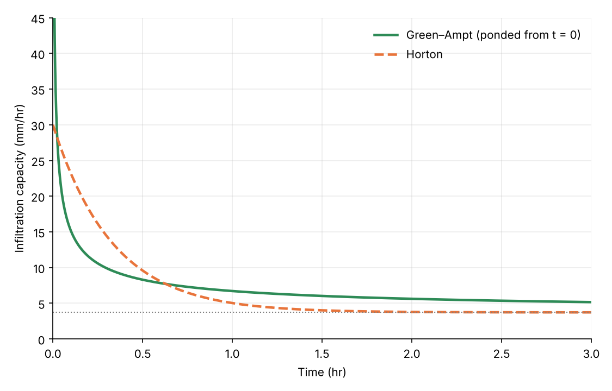
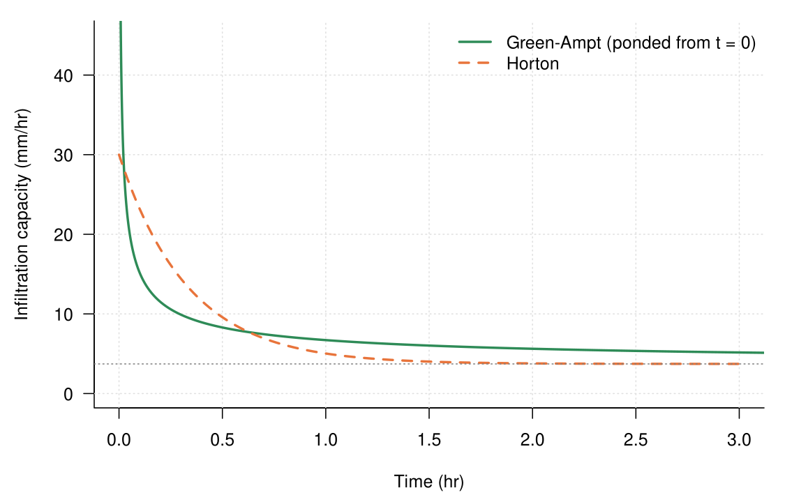
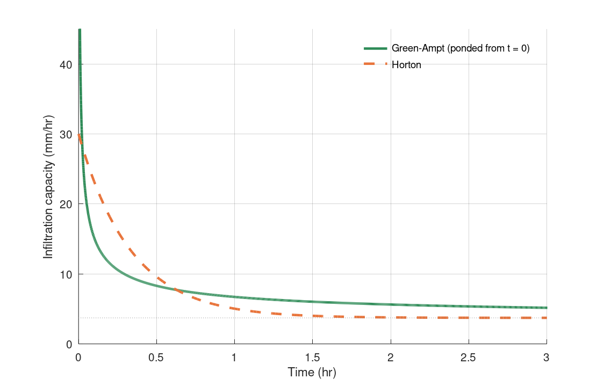

Chapter 7 · Soil Moisture and Infiltration
Green–Ampt vs Horton infiltration capacity
Infiltration capacity from the Green-Ampt (physically based) and Horton (empirical) models.
Source: Chapter 7 draft; parameters from the chapter author (Figures_4_5_6_and_Table1_2026_10_02.xlsx, GreenAmpt sheet)
No external data file: values are small and embedded in the code.

Code: green_ampt_vs_horton.py · image: figure_python.png

"""Green–Ampt vs Horton infiltration capacity
Chapter 7 draft; parameters from the chapter author (Figures_4_5_6_and_Table1_2026_10_02.xlsx, GreenAmpt sheet)
Run: python3 green_ampt_vs_horton.py -> figure_python.png"""
import numpy as np, matplotlib
matplotlib.use("Agg"); import matplotlib.pyplot as plt
# Silty clay, Campbell parameters (GreenAmpt sheet). Units: mm and hours.
phi, theta_i = 0.492, 0.37 # porosity, initial water content
Ks = 3.72 # saturated hydraulic conductivity (mm/hr)
psi_f = 70.0 # wetting-front suction head (mm) -- see note in README
r = 10.0 # constant rainfall rate (mm/hr)
f0, fc, beta = 30.0, Ks, 3.0 # Horton: initial capacity, final capacity (= Ks), decay (1/hr)
dtheta = phi - theta_i
dt = 0.02; t = np.arange(0, 3.0 + dt / 2, dt)
I = np.zeros_like(t); ipot = np.full_like(t, np.nan); iact = np.zeros_like(t)
for k in range(len(t)):
ipot[k] = Ks * (1 + psi_f * dtheta / I[k]) if I[k] > 0 else np.inf # Green-Ampt capacity
iact[k] = min(r, ipot[k])
if k + 1 < len(t): I[k + 1] = I[k] + iact[k] * dt
horton = fc + (f0 - fc) * np.exp(-beta * t)
# Green-Ampt capacity as a function of time under ponded conditions: solve K t = F - A ln(1 + F/A), A = psi_f * dtheta.
A = psi_f * dtheta
Fp = np.linspace(1e-3, 80, 4000); tp = (Fp - A * np.log(1 + Fp / A)) / Ks
fg = Ks * (1 + A / Fp)
fig, ax = plt.subplots(figsize=(7.5, 4.8))
ax.plot(tp, fg, color="#2e8b57", lw=2.2, label="Green–Ampt (ponded from t = 0)")
ax.plot(t, horton, color="#e8743b", lw=2.2, ls="--", label="Horton")
ax.axhline(Ks, color="grey", lw=1, ls=":")
ax.set_xlim(0, 3); ax.set_ylim(0, 45); ax.set_xlabel("Time (hr)"); ax.set_ylabel("Infiltration capacity (mm/hr)"); ax.legend(frameon=False); ax.grid(alpha=0.25)
for s in ("top", "right"): ax.spines[s].set_visible(False)
fig.tight_layout(); fig.savefig("figure_python.png", dpi=150)

Code: green_ampt_vs_horton.R · image: figure_r.png

# Green–Ampt vs Horton infiltration capacity
# Chapter 7 draft; parameters from the chapter author (Figures_4_5_6_and_Table1_2026_10_02.xlsx, GreenAmpt sheet)
# Run: Rscript green_ampt_vs_horton.R -> figure_r.png (base R, no packages)
# Silty clay, Campbell parameters (GreenAmpt sheet). Units: mm and hours.
phi <- 0.492; theta_i <- 0.37; Ks <- 3.72; psi_f <- 70; r <- 10
f0 <- 30; fc <- Ks; beta <- 3
dtheta <- phi - theta_i; dt <- 0.02; t <- seq(0, 3, by = dt)
I <- numeric(length(t)); ipot <- numeric(length(t)); iact <- numeric(length(t))
for (k in seq_along(t)) {
ipot[k] <- if (I[k] > 0) Ks * (1 + psi_f * dtheta / I[k]) else Inf
iact[k] <- min(r, ipot[k])
if (k < length(t)) I[k + 1] <- I[k] + iact[k] * dt
}
horton <- fc + (f0 - fc) * exp(-beta * t)
A <- psi_f * dtheta
Fp <- seq(1e-3, 80, length.out = 4000); tp <- (Fp - A * log(1 + Fp / A)) / Ks; fg <- Ks * (1 + A / Fp)
png("figure_r.png", width = 1125, height = 720, res = 150)
par(mar = c(4.5, 4.5, 1, 1), las = 1)
plot(NA, xlim = c(0, 3), ylim = c(0, 45), xlab = "Time (hr)", ylab = "Infiltration capacity (mm/hr)", bty = "l"); grid(col = "grey88")
lines(tp, fg, col = "#2e8b57", lwd = 2.2); lines(t, horton, col = "#e8743b", lwd = 2.2, lty = 2); abline(h = Ks, col = "grey50", lty = 3)
legend("topright", bty = "n", lwd = 2.2, lty = c(1, 2), col = c("#2e8b57", "#e8743b"), legend = c("Green-Ampt (ponded from t = 0)", "Horton"))
invisible(dev.off())

Code: green_ampt_vs_horton.m · image: figure_matlab.png

% Green–Ampt vs Horton infiltration capacity
% Chapter 7 draft; parameters from the chapter author (Figures_4_5_6_and_Table1_2026_10_02.xlsx, GreenAmpt sheet)
% Run: run green_ampt_vs_horton.m -> figure_matlab.png (MATLAB or GNU Octave)
clear; close all;
% Silty clay, Campbell parameters (GreenAmpt sheet). Units: mm and hours.
phi = 0.492; theta_i = 0.37; Ks = 3.72; psi_f = 70; r = 10;
f0 = 30; fc = Ks; beta = 3;
dtheta = phi - theta_i; dt = 0.02; t = 0:dt:3;
I = zeros(size(t)); ipot = zeros(size(t)); iact = zeros(size(t));
for k = 1:numel(t)
if I(k) > 0, ipot(k) = Ks * (1 + psi_f * dtheta / I(k)); else, ipot(k) = Inf; end
iact(k) = min(r, ipot(k));
if k < numel(t), I(k + 1) = I(k) + iact(k) * dt; end
end
horton = fc + (f0 - fc) * exp(-beta * t);
A = psi_f * dtheta;
Fp = linspace(1e-3, 80, 4000); tp = (Fp - A * log(1 + Fp / A)) / Ks; fg = Ks * (1 + A ./ Fp);
figure('Visible', 'off', 'Position', [100 100 750 480], 'Color', 'w'); hold on;
h1 = plot(tp, fg, '-', 'Color', [0.18 0.545 0.341], 'LineWidth', 2.2);
h2 = plot(t, horton, '--', 'Color', [0.91 0.455 0.231], 'LineWidth', 2.2);
plot([0 3], [Ks Ks], ':', 'Color', [0.5 0.5 0.5]);
xlim([0 3]); ylim([0 45]); xlabel('Time (hr)'); ylabel('Infiltration capacity (mm/hr)');
legend([h1 h2], {'Green-Ampt (ponded from t = 0)', 'Horton'}, 'Location', 'northeast'); legend boxoff;
box off; grid on; set(gca, 'GridAlpha', 0.2);
print('-dpng', '-r150', 'figure_matlab.png');